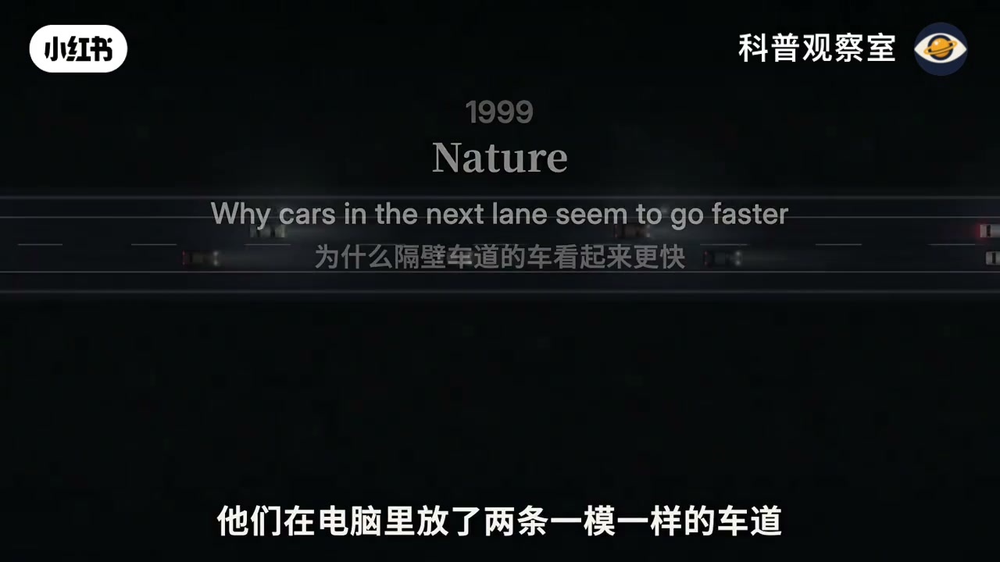
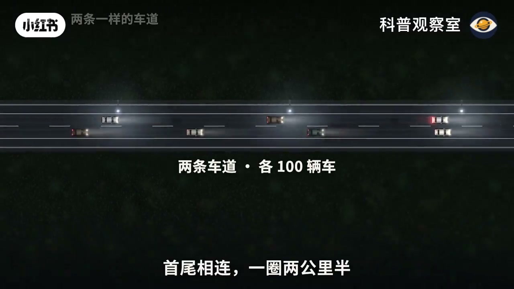
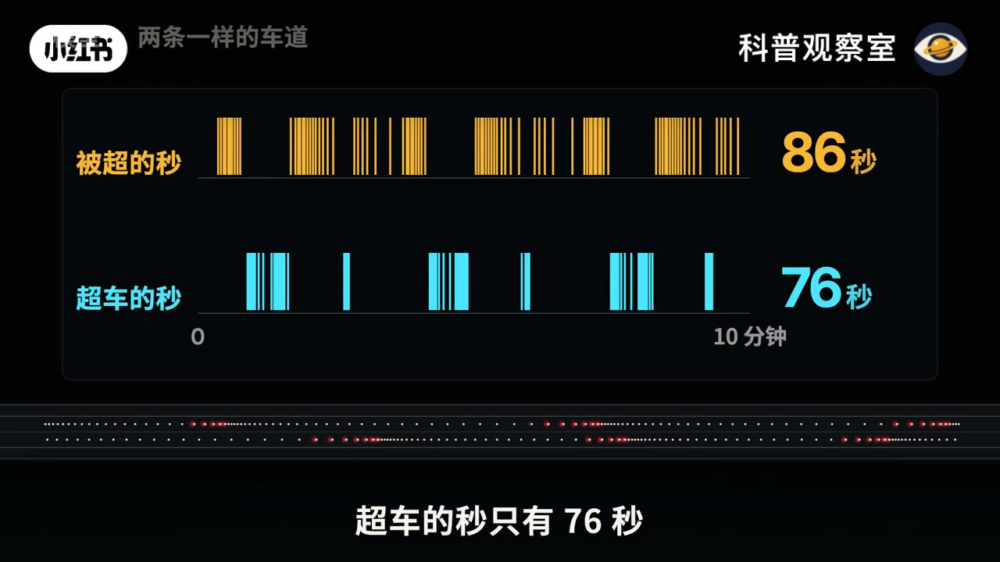
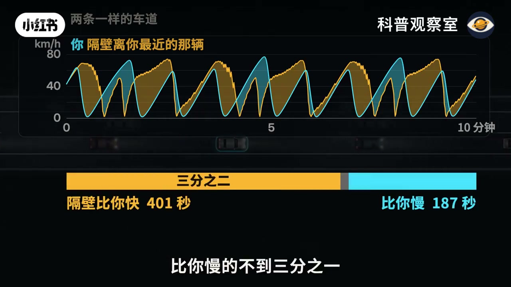
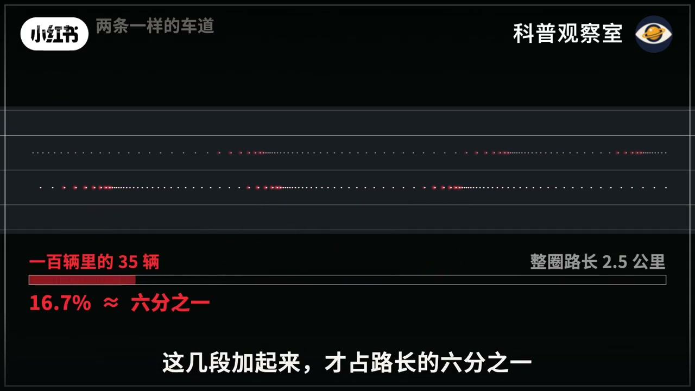
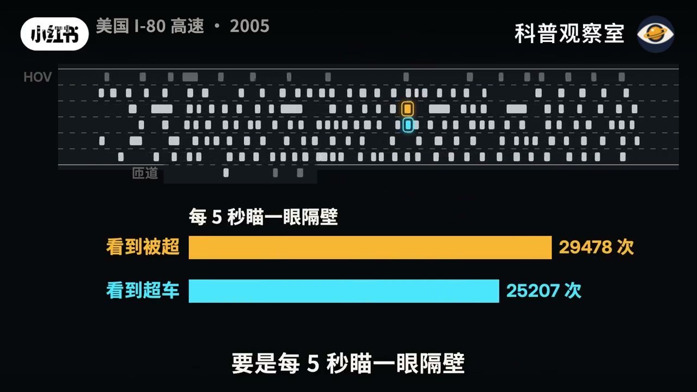
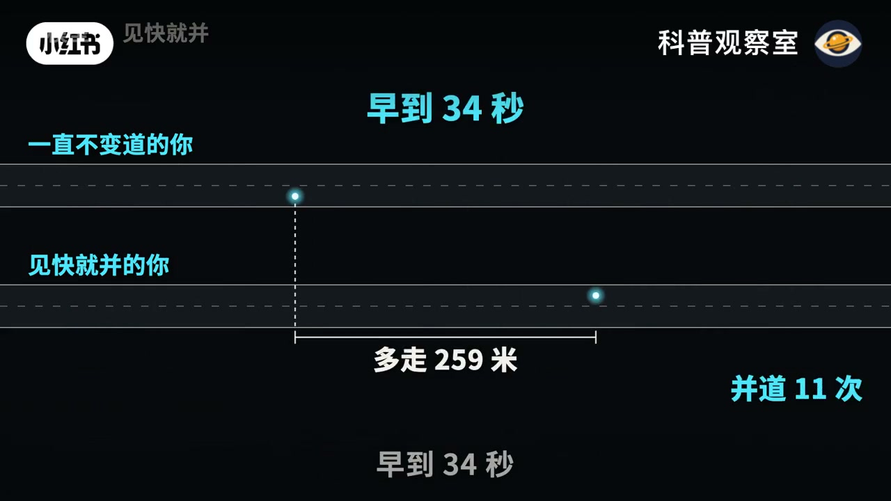
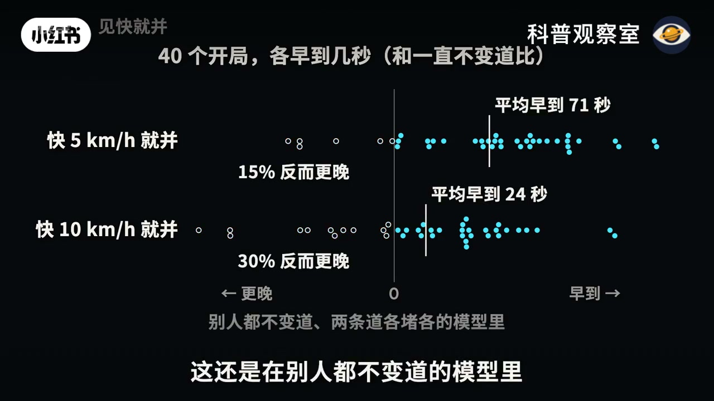

内容要点
这是一条把论文、环路仿真和高速公路轨迹叠在一起的驾驶科普。前半有口播，大约 1 分 56 秒之后口播中断，数字改由画面字幕给出。下面按视频自己的推进来概括，不把仿真秒数和视频时间混成一件事。
知识结构
开场就是并道又堵住。画面给出 1999 年《自然》论文题目，并把答案写成「错觉」：两条一模一样的车道，被超的时间更长。
各 100 辆车绕 2.5 公里，谁也不变道，两条道都约每小时 33 公里。十分钟里被超 86 秒、超车 76 秒，超过你的是 86 辆，你超过的是 85 辆。
2001 年博斯特罗姆的反驳：隔壁最近那辆更快占 401 秒，更慢只有 187 秒；它平均 44.4 km/h，你只有 33.5。停格时 35 辆车挤在大约六分之一的路段上。
I-80 约 500 米、5678 辆车。随便一秒，隔壁更快占 48%、更慢占 40%。身边那辆平均只快 6%，而且一条道堵着时旁边那条有 74% 的时候也堵着。
一例并了 11 次，早到 34 秒，多走 259 米。40 个开局里，阈值放宽到快 5 km/h 就并，平均早 71 秒，仍有 15% 更晚。
120 名学车的人看一段隔壁其实略慢的高峰录像，70% 说隔壁快。片尾把「早到五分钟」收成早五分钟出门。
隔壁「看起来总在走」有两层：被超更磨时间，而且你卡在堵团里时旁边那一段经常是散开的。真高速上这点优势只剩大约 6%，变道早到的是几十秒，不是一段路。
口播大约在 1 分 56 秒结束，Whisper 最后一句还在重复「这几段」。2 分 14 秒之后的 I-80、变道实验和调查，正文依据是画面上的字幕和图表，不另编解说词。仿真时钟（例如第 284 秒）是十分钟实验内部的秒，不是视频进度。
00:00–00:30并过去，刚才那条道又动了
夜里的高架上，两条车道速度差得很开：一边大约 30 km/h，另一边只有 7 km/h。口播先把体感说完：堵车的时候，隔壁那条道好像总在往前走。画面紧接着补上口播没念到的下一句：你瞅准机会并过去，没开多远又堵住了，正从你旁边一辆接一辆地过去。
标题打出「隔壁真的更快？」之后，视频把问题交给 1999 年《自然》上的一篇短文。画面上的英文题目是 Why cars in the next lane seem to go faster，中文写成「为什么隔壁车道的车看起来更快」，答案栏直接写「错觉」。字幕说两位研究者在电脑里放了两条一模一样的车道，一秒一秒地数；这期也照着跑一遍。视频未在这一段念出两位作者的名字，名字出现在片尾文献，是 Redelmeier 与 Tibshirani。

00:28–01:28一样的规则，被超却更久
环路设定在画面上写得很具体：两条车道，各 100 辆车，首尾相连，一圈 2.5 公里。所有车照同一套跟车规则开，前面空了就加速，离前车近了就减速，谁也不变道。口播把「不变道」听成了「不便到」，画面字幕是「谁也不变道」。跑完以后两条道的平均车速一样，仪表大约是 33.6 km/h 和 33.5 km/h，口播说成每小时 33 公里左右。
车一多，路上自己就堵出一团一团，还往后传。视角落到一辆青色的车上。口播说「青涩的车」，画面写的是「青色的车」。这辆车有三分之一的时间每小时不到 20 公里，只一点点往前挪；速度图上把这段标成 34%。前面一散开，又能跑到七十多。
论文的数法是每一秒看一次：这一秒是你超了隔壁的车，还是隔壁的车超了你。口播这里听成「车的速度表示」，和字幕「论文的数法是：每一秒」对不上，正文采用字幕。十分钟下来，被超的秒有 86 秒，超车的秒只有 76 秒。可要是数车，超过你的 86 辆，你超过的 85 辆，几乎一样多。
差别出在超的方式。你冲起来的时候，旁边是挤成一团的车。画面停在仿真第 284 秒：这一秒你超过 2 辆，时速大约 73 km/h；口播说有时一秒就超过去两三辆。别人超你的时候，车和车拉得开，时速只剩大约 3 到 7 km/h，86 辆一辆占一秒。一样多的车，被超花的时间更长。所以论文说，隔壁更快，是错觉。


01:28–02:14反驳：隔壁这一秒常常真的更快
两年后，哲学家博斯特罗姆写文章反驳：不全是错觉。画面给出 2001 年和英文名 Nick Bostrom，标题是 Cars in the next lane really do go faster，中文写成「隔壁车道的车真的更快」。还是这十分钟，随便挑一秒，看隔壁离你最近的那辆车。它比你快的时候占三分之二，比你慢的不到三分之一。速度条上的实数是：隔壁比你快 401 秒，比你慢 187 秒。401 加 187 是 588，不满 600 秒；视频没有解释剩下的十几秒，这里不补。
一路上你身边那辆车平均每小时 44.4 公里，你自己 33.5，全体车 33.6，和所有车的平均一样。口播把 44.4 说成「四十四」、把 33.5 说成「三十三公里多」，和画面一致，只是没读到小数。
停下来看这一刻：一百辆车里三十五辆挤在堵着的几段，时速不到 20。口播在这里开始重复「这几段」并结束。后面的空间账在画面上：一百辆里的 35 辆，对应路长 16.7%，大约六分之一；整圈仍是 2.5 公里。你是这一百辆里的一辆，三分之一的时间卡在这几段。可隔壁堵的地方在别处，你身边那一段往往是散的，所以随便哪一刻，隔壁真的更常比你快。下一张卡片把两句并列：随便哪一刻隔壁更常比你快；可一整趟下来，两条道一样快。


02:14–02:54换到 I-80，优势缩成 6%
这一段没有口播。画面切到「美国 I-80 高速 · 2005」。字幕说美国交通部在加州一栋 30 层的楼顶架了 7 台摄像机，对着大约 500 米。记下的是 2005 年 4 月 13 日下午 4:00 到 5:30 的高峰，5678 辆车，每辆每 0.1 秒一个位置。片尾文献把它写成联邦公路局的 NGSIM 轨迹，路名在画面上排成「1-80」，即州际 80 号公路。
一样随便挑一秒，这回样本是 59.6 万个车秒。隔壁那辆比你快的占 48%，比你慢的占 40%。视频没有给剩下那一成多标成「一样快」，这里也不标。要是每 5 秒瞄一眼隔壁，看到被超 29478 次，看到超车 25207 次，比看到自己超车多 17%。身边那辆平均 19.0 km/h，你 17.9 km/h，只快 6%；括号里写着模型里快三成，对应前面 44.4 对 33.5 的差距。字幕的判断是：效果是真的，只是小得多。
模型里两条道各堵各的；真的路上，一条道堵着的地方，旁边那条 74% 也堵着，大约四分之三。这 500 米里，还有 29% 的车换过道。所以实测既没有完全取消「隔壁常常更快」，也没有保留仿真里那种各堵各的、可以随便拣空当的路。

02:54–03:22见快就并，早到的是几十秒
画面问：那一看隔壁快就并过去，能早到吗？规则写在图上：隔壁快 10 km/h 以上就并，空当够，后车不用急刹，才并过去。半小时的一条示意里，见快就并的你并了 11 次（途中有一帧写成 10 次，结算帧是 11 次），比一直不变道早到 34 秒，多走 259 米。
接着是 40 个开局，各早到几秒，对照的是一直不变道。快 5 km/h 就并，平均早到 71 秒，15% 反而更晚；快 10 km/h 就并，平均早到 24 秒，30% 反而更晚。轴的左边标「更晚」，右边标「早到」。底部一行把前提写死：别人都不变道、两条道各堵各的模型里。这还是口播没再出现的画面结论，不能当成任意高速、别人也在变道时的承诺。


03:22–04:05明明略慢，七成的人仍说隔壁快
调查画面写：论文作者给 120 个学车的人看一段 4 分钟的高峰录像。录像里，隔壁其实略慢。结果 70% 说隔壁快，65% 的人说，安全的话会变道。视频把这归到论文作者的调查，没有在这一页写出是 1999 年那篇还是 2000 年 Chance 上的续篇；片尾两篇都列了，正文不替它指定。
最后几句又回到环路：你有三分之一的时间卡在挤的那几段；多数时候隔壁真的比你快；可一整趟下来两条道一样快；你超过的车和超过你的车一样多。想早到五分钟，最好的办法是早五分钟出门。落款是 Redelmeier 与 Tibshirani，2000。参考文献随后列出《自然》1999、Chance 2000、Bostrom 2001、NGSIM 的 I-80、以及跟车与变道模型 MOBIL 的论文。这些是片尾书目，视频没有逐条重做实验。